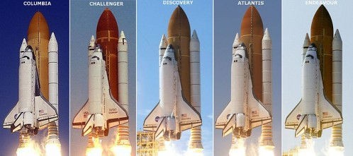
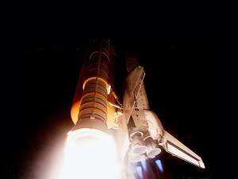
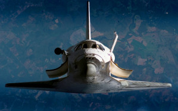

Lo Space Trasnsportation System o STS, più comunemente conosciuto con il nome di Space Shuttle, è stato il più importante e tecnologicamente avanzato mezzo spaziale per il trasporto umano e logistico mai costruito dall'uomo sul quale nel corso dei suoi oltre trent'anni di carriera e delle sue 135 missioni spaziali, hanno volato 811 persone e sono stati messi in orbita 66 satelliti. La fiotta Shuttle era composta da 5 navette, Atlantis, Challanger, Columbia, Discovery, e Endeavour e il primo volo risale al 12 Aprile 1981 con la STS 1 ma la progettazione cominciò molti anni prima, verso la fine della guerra fredda nel 1969 con l'esigenza da parte della Nasa di costruire un veicolo riutilizzabile nell'intento di abbattere i costi del trasporto spaziale che fino ad allora era affidato al progetto Apollo, non riutilizzabile
Il sistema era composto da 4 componenti pricipali: l'Orbiter, (la navetta per il trasporto dei passeggeri e dei materiali), il serbatoio centrale che conteneva il carburante per il motore principale, SSME, situato sull'Orbiter e i 2 Booster, (i razzi laterali che fornivano la spinta necessaria insieme al motore principale). L'Orbiter una volta uscito dall'atmosfera, dopo aver sganciato i Booster e il serbatoio principale raggiungeva una velocità di circa 27.000 kmh, necessaria al mantenimento dell'orbita intorno alla Terra, e a causa di questa estrema velocità la navetta era equipaggiata con un sistema di protezione termica per rientrare in atmosfera, formato da moltissime piccole piastrelle di ceramica che ne isolavano la parte inferiore. Questa era la fase più delicata di ogni missione nel quale la pancia del veicolo, rivolta verso il basso, grazie all'attrito con l'atmosfera raggiungeva i 1650 C°, ed è proprio in questa fase che avvenne il disastro del Columbia nel 2003 dove perse la vita l'intero equipaggio e che portò alla temporanea sospensione del programma Shuttle. L'incidente fu causato da un pezzo di "schiuma termica" che si staccò dal serbatoio principale durante il lancio della missione, causando un foro grande come un pallone da calcio nell'ala dell'Orbiter e al momento del rientro, a causa della grandissima temperatura raggiunta, il calore riuscì a penetrare nella navetta facendola disintegrare completamente. L' altro grande disastro era avvenuto nel 1986 al Challanger in fase di lancio, lo Shuttle esplose pochi secondi dopo la partenza e anche in questo caso morì tutto l'equipaggio. La causa fu la bassissima temperatura invernale registrata la mattina del lancio, una guarnizione del serbatoio centrale si ruppe a causa di questa temperatura estremamente bassa il carburante che fuoriuscì durante il volo si incendiò facendo esplodere completamente il serbatoio principale distruggendo l'intero veicolo.
Fatta eccezione per questi due terribili incidenti, il programma Shuttle, nei suoi trent'anni ha collezionato moltissimi grandi successi in importantissime missioni che hanno cambiato il nostro modo di vedere e comprendere l'universo, i suoi fenomeni e il nostro ruolo all'interno di esso. A questo programma in particolar modo dobbiamo dare il merito di due eventi fondamentali, i più importanti dell'era Shuttle: la messa in orbita del telescopio spaziale Hubble, (il nostro occhio sull'universo), lanciato nel 1990 e tutt'ora in perfetto stato di funzionamento anche grazie alle missioni di riparazione e aggiornamento effettuate dallo Shuttle, e la maggiorparte della costruzione del nostro attuale avamposto nello spazio, la Stazione Spaziale Internazionale o ISS, cominciata nel 1998 e terminata nel 2011.
L'ultimo volo dello Shuttle è avvenuto nel 2011 con la STS 135, il progetto è stato abbandonato dalla Nasa non solo per i due disastri avvenuti in passato e per i costi eccessivi ma anche per lasciare il posto a nuove tecnologie finanziate da società private che hanno già cominciato a progettare nuovi veicoli per il trasporto umano e logistico nello spazio, compresi i trasporti a fine turistico che nei prossimi anni vedremo svilupparsi come un nuovo progetto di investimento da parte di queste società.
